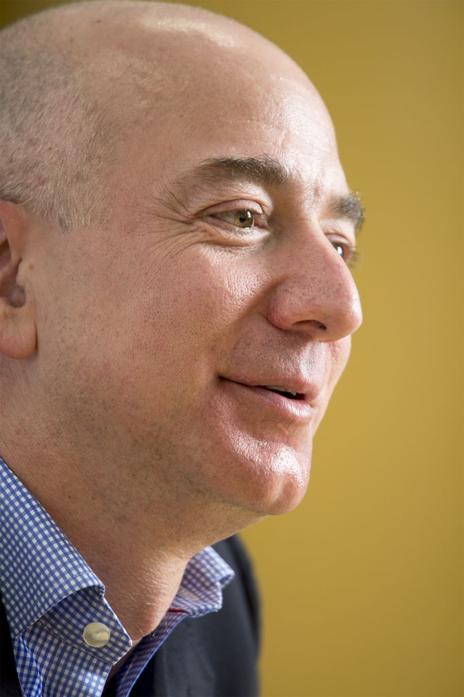
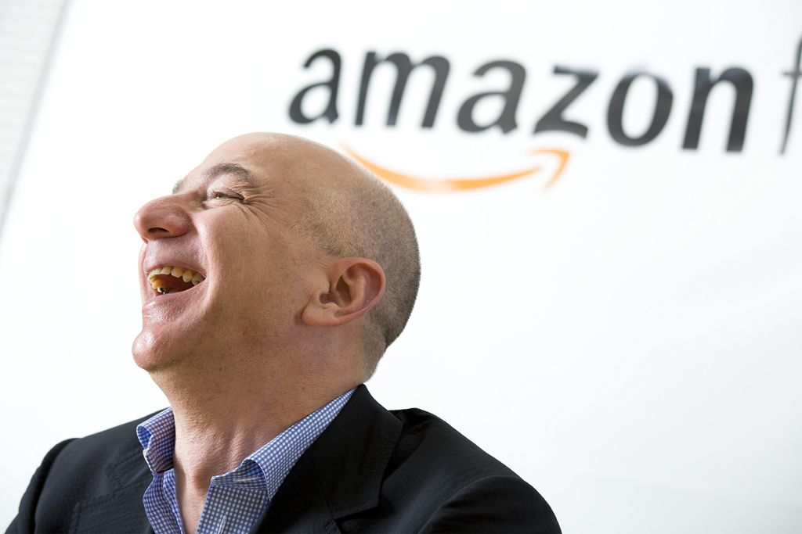
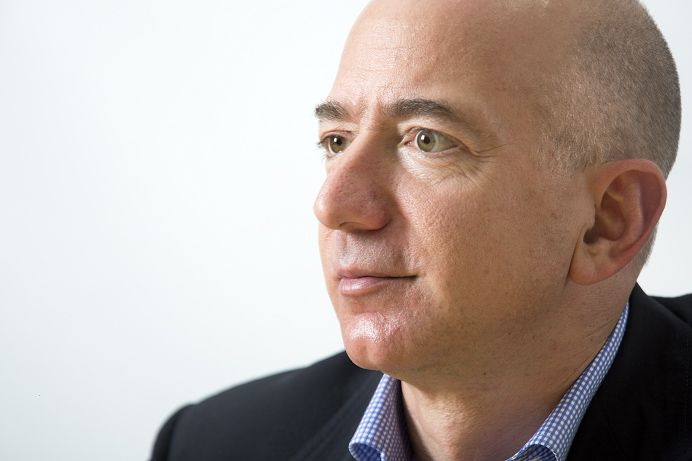

| ジェフ・ベゾス 果てなき野望 の読み方 特別編 | |
| 滑川 海彦 | |
『ジェフ・ベゾス 果てなき野望』の読み方 特別版
滑川海彦 著
本書では、書籍『 ジェフ・ベゾス 果てなき野望 』（日経ＢＰ社）の読み方、読みどころをまとめました。同書の解説者、滑川海彦氏が紹介しています。
※ このリンクは、ｉＰｈｏｎｅ、ｉＰｏｄ Ｔｏｕｃｈ、ｉＰａｄのＫｉｎｄｌｅアプリからは、ご利用できません。ご了承下さい。
初出は、日経ビジネスオンライン「アマゾンを率いるジェフ・ベゾスの読み方」として、２０１４年１月に掲載した記事です。記事のＵＲＬ‥ http://business.nikkeibp.co.jp/article/report/20140108/257888/
アマゾン・ドットコムのＣＥＯ（最高経営責任者）、ジェフ・ベゾスはクリスマス商戦を目前にして、自動操縦のミニヘリコプター（ドローン）で空中から商品を配達する「プライム・エアー」という構想をテレビ番組の中で公開した。もちろん法的規制を考えただけでも実用化されることは当分ありそうにないが、アマゾンが公開した動画（ https://www.youtube.com/watch?v=98BIu9dpwHU&feature=youtu.be ）は、あっという間に１３００万回も再生された。
一見破天荒なアイデアをブルドーザーのようなパワーで最後には実現してしまうことで知られているベゾスのこと、そのうち本当に玄関にアマゾンの配達ドローンが飛んでくるようになるのかもしれない。
さて、ジェフ・ベゾスはスティーブ・ジョブズ亡き後、その後継者と目され、動向が常に注目を集めている。ジェフ・ベゾスとはいったいどういう人物なのか？
正真正銘、顧客第一で長期的
アマゾン・ドットコムはいろいろな意味で型破り、かつ謎が多い企業だ。書籍、おもちゃ、カメラ、電気洗濯機をオンラインで売り、キンドルタブレットを独自に製造販売する一方で、世界最大級のクラウド・コンピューティング・サービスの提供者でもある。最近はＩＢＭを退けてＣＩＡ（アメリカ中央情報局）から大規模な情報共有システムの構築を受注して注目されている。
アマゾンはなぜ一見無関係とも見える分野に貪欲に進出するのか？
もう一つ、アマゾンには大きな謎がある。グーグル・ファイナンス（ https://www.google.com/finance?q=NASDAQ%3AAMZN&ei=KgO2UvCAOcidkgWc1QE ）によれば、２０１４年１月のアマゾンの時価総額は１８１４億ドル（約19 兆円）、従業員８万８４００人と、どんな基準からみても世界的大企業だ。ところがその営業利益率は非常に低く、このところ１％を上下している。マイクロソフトの34 ％、アップルの28 ％など巨大テクノロジー企業の営業利益率と比較にならないのはもちろん、同じ小売業のウォルマートの６％、ターゲットの７％に比べても格段に低い。
しかし、アマゾンの株価は２００８年11 月に38 ドルの安値を付けて以降、一本調子で上がり続け、現在は４００ドル前後になっている。これほど低い利益率でなぜ株価が５年で10 倍以上になるのか？
こういった謎を解く鍵は、アマゾンの創業者、会長、社長、ＣＥＯにして最大株主のジェフ・ベゾスにある。『ジェフ・ベゾス果てなき野望』に、ジェフ・ベゾスのこんな言葉が紹介されている。

我々は正真正銘、顧客第一ですし、正真正銘、長期的です。また、正真正銘、創意工夫を重視しています。ほとんどの会社は違います。顧客ではなく、ライバル企業のことばかり気にします。２年から３年でリターンが得られることばかりやりたがりますし、２～３年でうまくいかなければ、ほかのことを始めます。新しいことを発明するより、誰かの発明をまねするほうを好みます。そのほうが安全だからです。これがアマゾンが他社と違う理由であり、アマゾンの実態です。この３要素をすべて備えている企業はほとんどないのです。
──『ジェフ・ベゾス 果てなき野望』プロローグより
実は、アマゾンの顧客第一主義と長期的な視点を個人的に実感したのが、私がアマゾンに興味を持ったきっかけだった。もう７年近く前になるが、アメリカのアマゾンで日本では発売されていない映画のＤＶＤを注文したことがある。カタログには「リージョンフリー（世界中どこの地域でも再生できる）」と表示されていたのに、届いたＤＶＤはリージョンが違っていて再生できなかった。アマゾンのカスタマー・センターに「返品したい」とメールすると、３時間ほどで「代金は返金する。ＤＶＤを送り返す必要はない」という返事が返ってきた。「通販は便利だが、ひとたびトラブルがあると厄介なもの」と思っていたので、この迅速な対応には正直、驚いた。
ユーザーが低料金を求めるのは何十年経っても変わらない
２０１２年にre:Inventという開発者向けカンファレンスでベゾス自身がアマゾン経営の哲学をユーモアを交えて語ったビデオ（ https://www.youtube.com/watch?v=O4MtQGRIIuA&feature=youtu.be ）が公開されている。少し長くなるが内容を訳して引用してみよう。
私はよく「５年後、10 年後には何が変わっているだろうか？」と尋ねられる。しかし本当に重要な質問は「５年後、10 年後にも何が変わっていないか？」だ。なぜなら、ビジネスの根本を長期にわたって不変な原則の上に建てることができるからだ。今から５年、10 年経ってユーザーが私のところに来て「ジェフ、値段をもっと高くしてくれないか」ということは想像できない。「配達を遅くしてくれ、品揃えを少なくしてくれ」などということもあり得ない。低料金、速い配送、幅広い品揃えは何十年経ってもユーザーが望むものだ。
高利益率ビジネスはうらやましい。しかし高利益率ビジネスからは日本人の言うカイゼン、効率化は生まれない。なぜならその必要がないからだ。必要は発明の母だ。18 年にわたってアマゾンはリーンな低利益ビジネスを追求してきた。それはアマゾンの文化だ。
「顧客第一」と口先で言うことはやさしい。しかし、赤字覚悟の低料金で大規模な新事業をスタートさせたり（もっと細かいところではユーザーに返品を求めずに返金するようなカスタマーサポートのポリシーを設定したり）するのは難しい。それを18 年にわたって続けるのは至難の技だ。
ハリー・ポッターもキンドルも原価割れの勝負に出る
ほかにも『ジェフ・ベゾス 果てなき野望』では、ジェフ・ベゾスの長期的で顧客第一の戦略の数々が紹介されている。そのいくつかを紹介しよう。
ドットコムバブルの破裂でＩＴ企業が軒並み倒産する中、２０００年夏にはアマゾンの株価も３週間で半減するなど苦戦が続いていた。
この年の７月、シリーズ４作目となる『ハリー・ポッターと炎のゴブレット』が出版された。アマゾンは40 ％の値引きとともに、配本日の７月８日土曜日に顧客が受けとれるよう、通常配送料金でお急ぎ配送を提供するとした。１冊あたり何ドルかの損失が出る条件で25 万５０００冊ほどもの注文を受けたわけで、話題作りには損失が大きすぎるとウォール・ストリートは渋い顔だった。
──『ジェフ・ベゾス 果てなき野望』第４章より
総額１００万ドル（約１億円）の赤字が予想されたがベゾスはひるまなかった。結果としては、顧客から感謝の声が上がり、７００件を超えるアマゾンに好意的な報道があり、大きな効果を上げた。ベゾスは賭けに勝ったのだ。
電子書籍キンドルのスタート時のコンテンテンツの価格設定は、もっと大規模な例だ。
人気の書籍や新刊書はデジタル版をすべて９ドル99 セントの均一価格で提供するとベゾスが決めたのだ。（中略）たとえば30 ドルの本なら15 ドルで出版社から仕入れるわけで、それを９ドル99 セントで売れば、売れば売るほど損することになる。それでいいというのがベゾスの考え方だった──出版社は、出版の費用が少ない分、電子書籍の卸売価格を下げざるをえなくなると予想したからだ。それまでのあいだは、ベゾスお得意の未来に対する投資というわけだ。
──『ジェフ・ベゾス 果てなき野望』第８章より
この販売価格は出版社からの仕入れ価格を大幅に下回っており、売れば売るほど赤字になるはずだった。ぎりぎりまでこの価格を知らされなかった大手出版社は激怒し、長く続くキンドル戦争が勃発する。それでも、キンドルの低価格は顧客に喜ばれ、電子書籍が普及する後押しとなった。
もちろんベゾスの「顧客第一主義」は単に博愛の精神から出たものではない。「顧客第一主義は顧客のためになると同時に長期的に見て、アマゾンの利益になる」という確信から生まれたものだ。また、低利益率の追求には顧客の満足以外にもきわめて戦略的な隠れた目的があった。次回で紹介するが、ベゾスはスティーブ・ジョブズを非常に尊敬していたが、にもかかわらずｉＰｈｏｎｅを高利益率ビジネスにしたことをジョブズの大きな失敗と考えていたのだった。
アマゾン創業者でＣＥＯのジェフ・ベゾスは、社内外を問わず、荒唐無稽なアイデアも難しい交渉も、ブルドーザーのようなパワーで最後には実現してしまう。ブルームバーグ・ビジネスウィーク誌の上級ライター、ブラッド・ストーンが書いたノンフィクション『ジェフ・ベゾス果てなき野望』には、そんなジェフ・ベゾスのエピソードが数多く紹介されている。
ジェフ・ベゾスが長期的視点を持っていることや、徹底的にタフで優勝劣敗のアマゾンの企業文化を裏付ける話題を本書から紹介しよう。これこそが、アマゾンを20 年にわたって成長させてきた大きな源泉である。
スティーブ・ジョブズの失敗はくり返さない
アマゾンはもはや単なるショッピング・サイトではない。クラウドサービス「ＡＷＳ」（AmazonWeb Services）でテクノロジー業界を引っ張るＩＴ企業でもある。ＡＷＳは、インターネットを通じてアマゾンのサーバーでアプリケーションを作動させたり、データを保存したりできるいわゆるクラウド・コンピューティング・サービスだ。
料金は水道や電力と同じ従量制で、しかもその料金レベルは伝統的なレンタル・サーバーなどに比べ驚異的に安い。これは、長期的な視点を持ってベゾスが意識的にＡＷＳを赤字覚悟の低料金にしたからだ。
（担当者はＡＷＳの１つの）ＥＣ２インスタンスの料金として１時間15 セントを提案した。これなら収支とんとんになると考えたからだ。だが、スタート前のＳチーム会議で、これをベゾスが10 セントに引き下げてしまう。「その値段だと、長期にわたって赤字が続くことになりますよ」とヴァン・ビョルンが念押しするが、ベゾスは「上等だ」と取りあわなかった。
──『ジェフ・ベゾス果てなき野望』第７章より
なぜ、競合がまだいない段階で、最初から赤字覚悟の安い値付けをするのだろうか。ジェフ・ベゾスは株主に対して、「スティーブ・ジョブズの失敗をくり返したくない」と回答した。このベゾスの発言は、『ジェフ・ベゾス果てなき野望』で紹介されるまで知られていなかったが、アマゾンの戦略を理解するうえで重要なヒントになる。
アップルのｉＰｈｏｎｅはすばらしい製品であり、ユーザーはジョブズが設定した値段を喜んで支払う。何も問題はないように見えるが、ベゾスに言わせればそれが失敗なのだ。つまりこの分野でｉＰｈｏｎｅがそれだけの利益を上げられたのであれば、利益率を少々削れば価格優位な製品が作れると広く認識させてしまった。
グーグルがＡｎｄｒｏｉｄ ＯＳを無料でメーカーに提供開始すると同時に、スマートフォン市場は一気に激烈な競争の中に投げ込まれた。アップルは天文学的なキャッシュを社内に積み上げることには成功したが、スマートフォンのシェアではあっという間にＡｎｄｒｏｉｄに敗れたのだ。
通常、価格競争はある分野で優位に立った企業に対して後発企業が仕掛けるのが通例だ。しかしアマゾンは、「先制価格戦争」あるは「予防的価格戦争」を仕掛ける。新事業のスタートの際に意識的に赤字覚悟の料金を設定する（ちなみに、その時点で競争相手は存在しないから被害を受ける相手もいないので、反トラスト法が定める不正競争行為に該当しようがない）。
営業活動を何もしなくても料金の安さだけで大量の顧客が集まり、やがてアマゾン自身の努力でコストが削減され、赤字が解消される。その頃には競争相手がこの市場に参入するのは非常に難しくなっている。これだけ長期的な視野を持ち、タフな戦略を遂行できる経営者はなかなかいない。マイクロソフトやグーグルも最近クラウド・コンピューティングに本格的に参入してきたが、当分アマゾンの優位は揺らぎそうにない。
片方が常に勝つようにするのが交渉だ
『ジェフ・ベゾス 果てなき野望』の英語版では、ベゾスの妻、マッケンジーがアマゾンレビューで１つ星を付けたことが話題になった。ただしマッケンジーの事実関係の指摘は、「ジェフがカズオ・イシグロの『日の名残り』を読んだ時期が違う」といった比較的些細な誤りにとどまる。それなのになぜそれほど低い評価になったのかといえば、これはどうやら「ジェフはここに書かれているようなそんな冷酷な人間ではありません」というのが主な原因のようだ。
たしかに、本書で描かれるベゾスは冷酷ともいえる指令を次々と出している。アマゾン社員にも、交渉では徹底的にタフであることを求めている。「片方が常に勝つようにするのが交渉だ」というのがアマゾンの哲学だという。ブラッド・ストーンは本書でアマゾンの顧客第一主義と低価格戦略の裏で起きた死に物狂いの修羅場を詳しく紹介している。
アマゾンが電子書籍のキンドル・プラットフォームをスタートさせたとき、出版社はどこもあまり協力的ではなかった。レコード・レーベルがこぞってアップルのｉＴｕｎｅｓに参加したのはスティーブ・ジョブズＣＥＯの超人的説得力もあったが、当時はオンライン・ファイル交換サービスによってＣＤの売上が激減し、音楽ビジネス全体が崩壊の危機に直面していたからだった。しかし紙の本はＣＤと比べて簡単にはデジタル的コピーが作れないし、したがってオンラインでも共有できない。つまり、出版社にはそれほど怖い相手がいない。だからベゾスは、アマゾン自身が出版社の怖い相手になることにしたのだ。
「我々に向けられた狂気の源がジェフ・ベゾスなのは明らかでした。彼はキンドルの発売開始を指示するためにはこれだけのタイトルが必要だと、マジックナンバーにびっくりするほど執着していましたから」とある出版社の幹部はこう述べている。
ベゾスは出版社に対してキンドル向け電子書籍のタイトルを早急に揃えるよう可能な限りの、ときにはそれ以上の手段で圧力を掛けた。ハードカバーの新刊は通常15 ドルから30 ドル程度だから、電子版が10 ドル以下で売られることになれば出版社には打撃だ。そこで９ドル99 セントという予定価格も出版社には秘密にされた。
キンドル発表の記者会見後、ベゾスはチャーリー・ローズ・ショーなどさまざまな番組に登場し、９ドル99 セントという新刊とベストセラーの価格を大々的に宣伝するとともに書籍事業が変わりつつあるという自説を展開した。
「本は、未来永劫、死んだ木に印刷しなければならないなど、どこにも書かれていません」
厳しい現実がとうとうあきらかになり、出版社上層部は皆一様にだまされたとくやしがった。
──『ジェフ・ベゾス果てなき野望』第８章より
〝 ガゼルのように弱った〟 小さい出版社から狙え
９・99 ドル問題はこのあとも尾を引き、英米の大手版元とアップルを巻き込む反トラスト法訴訟にまで発展する（その詳細も『ジェフ・ベゾス 果てなき野望』に詳しい）。しかし出版社には、消費者がキンドルを歓迎し、即座に大成功を収めたという事実は変えようがなかった。
キンドルの一般公開後も、ベゾスは電子書籍獲得への圧力をますます強めた。その一例が「ガゼルプロジェクト」だ。ベゾスは「チーターが弱ったガゼルに近づくようにアマゾンは小さな出版社にアプローチしなければならない」と命じた。「チーターとガゼル」というのはベゾスのジョークだったらしいが、社内で発足したチームは密かに「ガゼルプロジェクト」と呼ばれるようになる。
なかなか動かない出版社に対し、特に小さい出版社からアマゾンは脅しをかける。アマゾンでの検索や顧客への推奨のアルゴリズムで優先順位を下げると通告したのだ。
推奨アルゴリズムから外した出版社は、売上が40 ％も落ちるのが普通だったからだ。だいたい30 日もすると出版社は音を上げたと、そのころシニアブックバイヤーをしていたクリストファー・スミスは言う。
──『ジェフ・ベゾス果てなき野望』第８章より
３カ月で１００億円費やしてライバルをたたきつぶす
ガゼルを狙うチーターが走り回ったのはキンドルの草原だけではない。ベゾスはこれと狙いをつけた企業を買収するためにもチーター戦術を取った。ダイアパーズ・ドット・コムというおむつのオンラインストアが買収に応じないとなると、アマゾン自身が利益を度外視した低価格でおむつの通販に乗り出した。
アマゾンは、３月で１億ドル以上の赤字を紙おむつだけで出す計算になったらしい。（中略）大赤字のアマゾン・マムは、ダイアパーズ・ドット・コムをたたきつぶし、会社を売却させるために導入されたプログラムだった。
──『ジェフ・ベゾス果てなき野望』第10 章より
靴のオンラインストアの大手ザッポスを買収する際もベゾスはエンドレス・ドット・コムというザッポス攻撃のための通販サイトを開設した。そして１億５０００万ドルをつぎ込んでついにザッポスを降伏させ、買収に成功した。
英語には「ソーセージを作る現場を見る」というイディオムがある。「良いものの裏にある不愉快な要素」といった意味だが、企業が競争するとき、多かれ少なかれこうした「ソーセージを作る」修羅場がある。いくつかの交渉戦術を取り上げてベゾスを「金の亡者」と非難する声はあるが、それはおそらく一方的な見方だ。たとえば「犠牲になった」ザッポスの創業者や社員たちはこの買収で得たアマゾン株式の値上がりで大金持ちになった。
アマゾンを理解する上でいっそう重要な問題は、そもそもベゾスはなぜインターネットという「新しい革袋」に低利益率の通販業という「古い酒」を盛ることを考えついたかという点だ。それはベゾスがウォール・ストリートでデビッド・ショーというもう一人の天才に出会ったときにさかのぼる。
アマゾンはもはや単なるオンライン書店ではない。本はもちろん、カメラ、家電、アパレルなども扱う。電子書籍ではキンドルというサービスとハードウェアを普及させて電子書籍市場で圧倒的な存在となった。アマゾンウェブサービス（ＡＷＳ）というクラウドサービスの分野でも、世界のトップ企業だ。なぜ、アマゾンは一見無関係にも思える分野も含めて、貪欲なまでに事業を拡張し続けるのだろうか。
この答えを導くキーワードが、「エブリシング・ストア」だ。アマゾンＣＥＯのジェフ・ベゾスのこれまでを追った近刊『ジェフ・ベゾス 果てなき野望』の原題が、「エブリシング・ストア─ジェフ・ベゾスとアマゾンの時代」（Everything Store: Jeff Bezos and the Age of Amazon）だ。アマゾンの本質を余すところなく突いたネーミングだが、著者のブラッド・ストーンの発明ではない。何でも売るお店、「エブリシング・ストア」というアイデアを考えたのは、ジェフ・ベゾス自身だ。
もうひとつ、ショーとベゾスが検討したアイデアがある。ふたりが「エブリシング・ストア」と名付けたものだ。基本的な考え方は「インターネット企業がメーカーと消費者をつなぎ、世界に向けてあらゆる商品を販売する」というもので、アイデア自体はシンプルだ。
『ジェフ・ベゾス 果てなき野望』──第１章より
「エブリシング・ストア」というアイデアはシンプルだったかもしれないが、その時期が１９９４年と異常に早かった。20 年前の94 年といえば、インターネットの黎明期。ティム・バーナーズ＝リーがワールドワイド・ウェブ構想を発表してからわずか３年しか経っていない。ヤフーが創立され、世界最初のウェブ・ブラウザ、ネットスケープが開発された年で、グーグルが創立されるのは４年後だ。そんな時期にインターネットの可能性に賭け、当時から今のアマゾンのアイデアを検討し、さらにはやり遂げてしまうベゾスの長期的な視点は、驚くべきものだ。

金融会社での出会いがベゾスの人生を変えた
ジェフ・ベゾスがインターネットとウェブに賭けるきっかけを作ったのは、デビッド・ショーという人物との出会いだった。これがベゾスにとって生涯最大の転機になった。
ベゾスは「ウォール・ストリートの金融機関から転身した異色のＩＴ起業家」と紹介されることがある。間違いではないが、やや誤解を招く表現だ。ベゾスはプリンストン大学でコンピュータ科学を学んだ後、「将来起業するならビジネスのことを知っておいたほうがいい」と考えてニューヨークの金融機関に職を求めた。しかし、あくまでコンピュータ通信システム構築のエンジニアとして働いたのであって、金融の実務に携わったことはない。ベゾスは優秀なエンジニアとしてすぐに頭角を現し、バンカーズ・トラストで最年少の副社長となる。そこにＤ・Ｅ・ショーという異色のヘッジファンドから誘いがかかった。１９９０年のことだった。
現在、Ｄ・Ｅ・ショーは世界有数の巨大ヘッジファンドだが、ベゾスが入社した当時はまだ創立２年目で、コンピュータによる裁定取引（アービトラージ）という分野のパイオニアだった。ヘッジファンドといえば先物デリバティブなどのいわゆる「投機」が想像されるが、裁定取引は投機ではない。あらゆる商業の根本ともいえる「鞘取り」をその本質とする。
ロンドンとニューヨークでドルの先物の価格がほんのわずか違っていたとする。この価格差を解消する取引を裁定取引（アービトラージ）と呼ぶ。当時、こうした取引は人手で行われていたが、コロンビア大学のコンピュータ学科助教授だったデビッド・ショーは、これを世界的なコンピュータ・ネットワークの上で展開すればリスクを取らずに巨額の利益が得られると考え、Ｄ・Ｅ・ショーを起業した。ベゾスはすぐに上級副社長に抜擢され、コンピュータ・ネットワークの開発の責任者となる。
ショーはベゾスにインターネットという新しいコンピュータ通信インフラが急激に成長中だと教えた。当時、ショーはインターネットの可能性をもっとも早く認識していた一人だったに違いない。二人の議論から「エブリシング・ストア」のアイデアが生まれた。
しかしいきなり「エブリシング・ストア」を始めることは不可能だ。最大の難関は、通常の商品には品質のばらつきがあるという点だ。金融裁定取引の場合は、１ドルは世界中で１ドルであることが自明だが、一般の商品はそうではない。靴といってもサイズと色と素材を指定したぐらいでは到底価値を判断できない。ウェブを利用して消費者を対象にして販売でき、１種類の商品がすべて同一価値であることが明白で安心して消費者が購入できるようなジャンルはなにか？と考えて、ベゾスは書籍のオンライン通販というアイデアにたどりついた。
しかし、アイデアを思いつくこととそれに人生を賭けることとは別だ。ベゾスは１９９４年に、デビッド・ショーの慰留を振りきって、妻のマッケンジーと二人、落ち着き先も決めないままニューヨークを後にする。
ベゾスとマッケンジーは家財道具をまとめ、とりあえず西に向かってくれと引っ越し業者に依頼する。最終的な目的地は翌日に連絡するから、と。荷物を送りだしたふたりは、まず、テキサス州フォートワースへ飛んだ。（中略）このときベゾスは31 歳でマッケンジーは24 歳。インターネットを利用する人々にとってもスタートアップを立ち上げたいと考える人々にとっても忘れられないストーリーとなる道をふたりで歩きはじめたわけだ。
『ジェフ・ベゾス 果てなき野望』──第１章より
ウェブのパイオニアで20 年生き残る
ベゾスは１９９４年にシアトルのガレージで起業、翌１９９５年にはアマゾンのサイトをオープンする。この直後ベゾスは、運営資金が底をつき、人生最大の危機に直面する。
ベゾスは資金調達に走りまわる。まず、母親の実家、ガイス家の信託財産から14 万５０００ドルをアマゾンに投資。だが、ベゾス家の資産で新規採用と成長に必要な資金を賄うのはとても無理だった。このとき助けてくれたのがニック・ハナウアーで、ひとり５万ドル、総額１００万ドルの調達をめざし、ベゾスの話を聞いてやってくれと60 人に声をかけてくれた。
『ジェフ・ベゾス 果てなき野望』──第２章より
ベゾスは、ＣＢＳの人気報道番組、『60 ミニッツ』でのインタビューで、この経験を詳しく語っている。「私は60 人に会って55 人から平均５万５０００ドルずつ資金を集めることができた。私が会った投資家は全員がまず『インターネットって何だ？』と尋ねた」という。どうにか１００万ドルを調達しアマゾンは消滅を免れた。その後も２００１年のドットコムバブルの破裂でアマゾンは株価が１ドル以下になるという暴落に見舞われるが、「最初の１００万ドルを集めたときがアマゾン最大の危機だった。そのあとのいろいろな出来事はこれに比べたら何でもない」と言ってベゾスはトレードマークの高笑いを響かせる。
最初に電話を発明しながら貧困のために特許争いに負けたアントニオ・メウッチ始めテクノロジー・ビジネスの歴史には、無数の「早すぎた先覚者」が倒れている。ほとんどの勝者は「上げ潮」を捉えて一気に波に乗った幸運な人々だ。
その勝者も、大きな挫折を経験しなかったものは少ない。最初の商用ウェブ・ブラウザ、ネットスケープを開発したマーク・アンドリーセンは、現在ではシリコンバレー最強のベンチャーキャピタリストと認められているが、アマゾンと同時期に起業したネットスケープ社をマイクロソフトに叩き潰されるという苦渋をなめている。スティーブ・ジョブズでさえ、アップルを追われて雌伏する時期が長かった。その点、ウェブ最初期のパイオニアでありながら20 年にわたって会社をもちこたえ、世界的大企業に成長させたのはベゾスがほとんど唯一の例だろう。
43 億円をかけて１万年時計を作る
ベゾスがビジョンを確固として追求できた理由の一つは、非常に長期的にものを考えるからだ。普通のアメリカのＣＥＯの目的は次の四半期決算を乗り切ることであり、長期的ビジョンといってもせいぜい数年先のことだ。しかしベゾスにとっては20 年でさえ一瞬にすぎない。それをよく表すのがベゾスの「１万年時計」プロジェクトだ。
ベゾスはテキサスの山岳地帯の私有地に桁外れに巨大な一種の鳩時計を建設している。何トンもあるおもりが１５０メートルの垂直なトンネル内を降下していくのが動力で、１年ごと、１世紀ごと、１千年紀ごとに、ブライアン・イーノが作曲したそれぞれ違ったメロディーをオルゴールが奏でるのだそうだ。この鳩時計はなんと向こう１万年動作することを目標にしている。『ジェフ・ベゾス果てなき野望』には、なぜ１万年時計を建築するかという問いに答えるベゾスの言葉が紹介されている。
あれがシンボルとして重要だという理由はいくつかあります。長期的に考えれば、そうしなかったらできないことを実現できます。時間的視野というのは大事─とても大事なのです。もうひとつ、指摘しておきたい点があります。人間は技術的な面ですごく進んでおり、みずからにとってもとても危険な存在になる可能性が大きいということです。人間という種族は、そろそろ長期的に考えはじめなければならないと私は思うのです。だからシンボルなのです。シンボルは大きな力を持ちうると思いますよ。
『ジェフ・ベゾス 果てなき野望』──第11 章より
この１万年時計プロジェクトの発案者は１９７０年代にカルト的な注目を集めた出版物『ホール・アース・カタログ』（全地球カタログ）の発行者で思想家のスチュワート・ブランドだ。ブランドはしばらく前から「人類は１万年単位で思考すべきだ」という「ロング・ナウ」というビジョンを主唱している。その象徴として１万年動く時計を構想したわけだが、ベゾスはこのビジョンに大いに賛同し、１号機の建設費、４２００万ドルを全額出資した。
「ハングリーであれ、愚直であれ」（stay hungry, stay foolish）というフレーズはスティーブ・ジョブズがスタンフォード大学の卒業式で行ったスピーチの結語に引用したことで広く知られるようになったが、実はスチュワート・ブランドがホール・アース・カタログの最終号の最終ページに掲載したものだった。元アマゾン社員で現在はグーグルのエンジニアで人気ブロガーでもあるスティーブ・イェギはベゾスを「人間離れした物知りで異常に頭が切れる。ほとんどエイリアンだ」と評したが、１万年後に思いをいたすために43 億円もかけて鳩時計を作ってしまうベゾスはたしかに「高笑いするエイリアン」のおもむきがある。
アマゾン創業者でＣＥＯ（最高経営責任者）のジェフ・ベゾスは、20 年前からなんでも売る「エブリシング・ストア」というアマゾンのアイデアを持っていた遠大なビジョナリーであることは、これまでに書いてきた。無能な部下には容赦のない上司でもあり、取引先にとってはタフな交渉者でもある。さらにベゾスは、猛烈な読書家でもある。
ジェフ・ベゾスが『ホール・アース・カタログ』の編集者で70 年代のアメリカン・カウンターカルチャーを代表する思想家、スチュワート・ブランドに傾倒していることを紹介したが、そのブランドがベゾスについてこんなエピソードを語っている。
ベゾスは単なる本好きというレベルではない──すべてを丹念に吸収するのだ。１９９５年に出た『ビルの学び方（How Buildings Learn）』の著者、スチュアート・ブランドは、その本なら読んだとベゾスが見せてくれた１冊に驚いたという。どのページにも、びっしりとメモが書き込まれていたのだ。
──『ジェフ・ベゾス 果てなき野望』第８章より
後付けの「講釈の誤り」は許さない
『ジェフ・ベゾス 果てなき野望』の巻末にはベゾスの愛読書12 冊がリストアップされているが、いずれもその分野の名著だ（うち10 冊は邦訳がある）。ベゾスはもちろんすべて徹底的に読み込んだのだろう。こういう上司をもったら部下は一瞬でも気を抜く暇がないに違いない。著者のブラッド・ストーンもベゾスにインタビューしたときに不意打ちを食っている。
私の本をテーマとした１時間の面談が終わりにさしかかったころ、ベゾスが体を乗りだし、こう尋ねてきた。
「講釈の誤りにはどう対処するつもりなのですか？」
講釈の誤り？ このものすごく頭がいい上司から予想外の質問をされ、冷や汗をかいたアマゾン社員はここ20 年でたくさんいたはずだが、このときの私もそういう感じだった。
──『ジェフ・ベゾス 果てなき野望』プロローグより
「講釈の誤り（narrative fallacy）」というのは２００８年の金融危機を確信をもって予言したことで有名になった経済理論家、ナシーム・ニコラス・タレブがベゾスの12 冊の愛読書の１冊、『ブラック・スワン─不確実性とリスクの本質』で詳細に論じたコンセプトだ。タレブによれば、オーストラリアで「黒い白鳥」が発見されるまで人類は「すべての白鳥は白い」と確信していた。これが「ブラック・スワン現象」で、簡単に言えば「人は異常なことが起きることをなかなか予測できない。しかし、いったん起きるとそれが必然だったという理屈を作り出す」ということだ。
ベゾスが20 年後を見通す異常なまでに遠大なビジョンを持っていたことはたしかだが、だからアマゾンが成功したと納得するならそれは後知恵による「講釈の誤り」だというのがこの唐突な問いの意味だったようだ。現実世界は想像を絶して複雑であり、日々の企業経営は暗闇での雑兵乱戦のような修羅場だ。
『ジェフ・ベゾス 果てなき野望』で、著者のブラッド・ストーンがキンドルをめぐる暗闘や過激な買収戦術も忌憚なく事実のとおりに記録したのは、このときの会話からそれがベゾスの真意だと察したからだろう。
猛烈な読書家であり、優れたコンピュータエンジニアであり、遠大なビジョナリーであり、妻には優しい夫であり、容赦無い上司であり、非情な交渉者であるジェフ・ベゾスという稀代の人格がどのような環境から生まれたのかも興味のあるところだ。

アメリカン・ドリームを信頼する義父、テキサス開拓者精神を持つ祖父
ベゾスという姓はヒスパニック系だが、ジェフ自身は北欧・英国系だ。ベゾスが母親の連れ子で再婚相手の養子だということは以前から本人が語っていたが、その前後の詳しい事実も本書で初めて明らかになった。母のジャッキー・ガイズは、サーカスで一輪車乗りをしている高校の上級生と交際していて16 歳で妊娠し、結婚するが、わずか17 カ月で破局する。ベゾスはこの実父の姓を取ってジェフリー・プレストン・ジョーゲンセンとして、ニューメキシコ州アルバカーキで１９６４年に生まれた。３年後にジャッキーは勤めていた銀行でアルバイトをしていた大学生と再婚する。大学生はマイク・ベゾスといい、カトリック教会の援助でキューバ革命の混乱を逃れてきた難民の一人だった。
マイク・ベゾスは苦学して大学を卒業し、石油会社のエンジニアとして順調にキャリヤを積む。養父が共産主義革命からの難民だったため、「ジェフたちは、勤勉に働く父の背中を見て、また、アメリカはいいところだ、チャンスと自由にあふれているという父の言葉を聞いて育った」という。
一方、ベゾスの母方の家系はテキサスの開拓者で、ベゾスの祖父は原子力委員会のエンジニアだったが、早く退職して妻の実家であるテキサスの田舎の大牧場の経営を始めた。ベゾスは小学生時代、祖父の牧場で夏休みを過ごした。祖父を手伝って「風車も直したし雄牛の去勢もした。荒れた道をならしたり、壊れたブルドーザーの重たい部品を動かすクレーンを作ったりもした」という。「農場ではなんでも自分でやるしかない。とても自立心が養われる」とベゾスは別のインタビューで語っている。
こうした家族環境は、夢に向って楽天的に突き進むベゾスの性格に影響を与えているように思われる。ベゾスは移民の義父から勤勉さとアメリカン・ドリームへの信頼を学び、祖父からは不屈のテキサス開拓者魂を受け継いだに違いない。
しかし、そうした環境と遺伝だけでベゾスが成功したと考えるなら、これも「講釈の誤り」を犯すことになるだろう。ベゾスはテキサスの小学校で英才教育のクラスに入っていたものの、当時はさほど突出した存在とは見られていなかったようだ。
「頭のいい生徒でやせ形、愛想がよくまじめ」と評した。教師からは「リーダーシップという面では特筆すべきものがない」と評価されていたらしい。
──『ジェフ・ベゾス 果てなき野望』プロローグより
もっとも後に、アマゾンにユーザーレビューを導入して大成功を収めるベゾスらしいエピソードもある。
教師はティム（ベゾスのこと）の独創性を高く評価していたが、同時に、こざかしいと感じる向きもあっただろう。算数でデータを表にまとめる授業があったとき、ティムは、６年生担当教師を評価する調査を行った。目的は「人気投票ではなく、教え方に基づいて教師を評価すること」だったそうだ。
──『ジェフ・ベゾス 果てなき野望』プロローグより
グーグルに転職する幹部に罵詈雑言
その後のベゾスを考えれば、「リーダーシップでは特筆すべきものがない」という評価は不思議だ。というのも、アマゾンに弱点があるとするなら、リーダーシップの欠如というよりむしろ過剰にありそうだからだ。
ジェフ・ベゾスそっくりな考え方をする幹部をアマゾンでは「ジェフボット」と呼ぶ。（中略）ベゾスのビジネス哲学を完璧に吸収し、それと合うように世界観を変えた人々で、顧客から始めてさかのぼらなければならないなど、ジェフィズムもよく口にする──まるで最優先指令（プライムディレクティブ）であるかのように。
──『ジェフ・ベゾス 果てなき野望』第８章より
ジェフボットで側近を固めることは事業をベゾスのビジョンのままに展開するためにはよいが、ベゾス自身が苦手な分野に挑戦する際には不利に働く。独自の汎用検索エンジンの開発はアマゾンのビッグプロジェクトでは珍しく失敗に終わった。その理由は複雑だが、大きな要因が天才的エンジニアのウディー・マンバーがベゾスとの関係に居心地の悪さを感じ、結局グーグルに引きぬかれたことだった。２００６年にマンバーがグーグルに移ろうとしていると聞かされてベゾスは激怒して悪口雑言を吐いてしまう。
数日後、落ち着きを取りもどしたベゾスはマンバーを慰留するが、もう手遅れだった。こうしてベゾスは、小売企業からテクノロジー企業への脱皮で苦労している最中という最悪のタイミングで技術部門統括の側近ふたりを失った。このあと、Ａ９ドット・コムの汎用検索エンジンは失敗に終わり、マンバーが去って１年で開発が打ち切られる。
──『ジェフ・ベゾス 果てなき野望』第７章より
マンバーはその後検索担当副社長に就任してグーグルの検索分野での独走に決定的な役割を果たすことになる。もっともアマゾンは検索エンジンプロジェクトの失敗の後クラウド・コンピューティングのAmazon Web Services（ＡＷＳ）に力を注ぎ、この分野ではグーグルに先行して勝者となっている。転んでもただでは起きないのがベゾスだと感心させられる。
グーグルといえば、その共同創立者、ラリー・ペイジとサーゲイ・ブリンも鉄壁の独裁者だが、彼らのマネージメントスタイルは現場からもっと距離を置いたものだ。どんな細部も徹底的に自分の思いどおりに仕上げなければ満足できないマイクロマネジメント的なベゾスの経営手法はやはりスティーブ・ジョブズに似ているかもしれない。
40 年以上音信不通だったベゾスの実父を探し当てる
もっともジョブズと大きく違うところもある。ジョブズが出生の事情を晩年になるまで語らず、実の両親には徹底して距離を置いたのに対してベゾスはもっとあけっぴろげだ─それでも「父といえばマイク・ベゾスだ。実父のことは病歴を記入するときくらいしか思いださない」と語っていた。
しかし、『ジェフ・ベゾス 果てなき野望』の著者のブラッド・ストーンは、調査報道のベテランだ。２００７年に当時大人気だったパロディーサイト、「偽ジョブズ日記」の筆者がフォーブス誌の上級編集者ダニエル・ライオンズであることをすっぱ抜いたことで有名だ。それ以前にはベゾスの極秘宇宙開発プロジェクト、「ブルーオリジン」の本拠のビルの向かいの道端のゴミ箱から計画概要書を拾いだしてスクープに成功したことがある。ストーンは実父、テッド・ジョーゲンセンがサーカスの一輪車乗りだったことを手がかりに調査を始め、ついに40 年以上音信不通だった実父がアリゾナ州で小さな自転車ショップを経営しているのを探し出すのに成功する。それを知ったベゾスの反応は本書に譲るが、ベゾスの人間性の複雑さをうかがわせて興味深いヒューマンドラマだ。
このように『ジェフ・ベゾス 果てなき野望』は、膨大な事実を明快な語り口でまとめ、組織というものは結局リーダーの資質に帰着するということを改めて認識させてくれる。本書で初めて明かされるエピソードも無数にあり、それぞれ興味深い。２０１４年のビジネスノンフィクションの中でももっとも重要な１冊になりそうだ。
著者紹介
滑川海彦 （なめかわ・うみひこ）
千葉県生まれ。東京大学法学部卒。東京都庁勤務を経てフリー。ＩＴ分野の評論と翻訳を手がける。ＩＴニュースブログ「TechCrunch Japan」翻訳チーム。著書に、『ソーシャル・ウェブ入門 Google, mixi, ブログ...新しいＷｅｂ世界の歩き方』（技術評論社）、『データベース 電子図書館の検索・活用法』（共著、東洋経済新報社）ほか、訳書に『フェイスブック若き天才の野望』『Ｙコンビネーター』（共訳、日経ＢＰ社）ほか。
フェイスブック‥ http://www.facebook.com/namekawa01
『ジェフ・ベゾス 果てなき野望』の読み方 特別版
電子書籍版データ作成日 ２０１４年３月26 日
著者 滑川海彦
発行者 高畠知子
発行 日経ＢＰ社
装丁 坂川栄治＋坂川朱音（坂川事務所）
写真 的野 弘路
● この電子書籍は、日経ビジネスオンラインに掲載した記事「アマゾンを率いるジェフ・ベゾスの読み方 特別版」（２０１４年１月）を基に制作しました。記事中の個人名、所属、肩書き、会社名、製品名などは掲載当時のものです。
《電子書籍版について》
● おことわり
本作品を電子書籍版として収録するにあたり、技術上の制約により一部の漢字を簡易慣用字体で表したり、カナ表記としている場合があります。
ご覧になる端末機器や、著作権の制約上、写真や図表、一部の項目をやむなく割愛させていただいている場合があります。また、端末機器の機種により、表示に差が認められることがあります。あらかじめご了承ください。
● ご注意
本作品の全部または一部を著作権者ならびに株式会社日経ＢＰに無断で複製（コピー）、転載、公衆送信することを禁止します。改ざん、改変などの行為も禁止します。また、有償・無償にかかわらず本作品を第三者に譲渡することはできません。